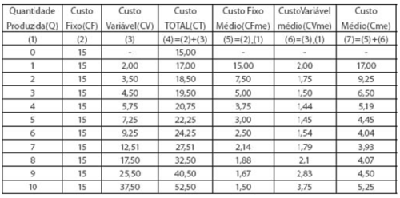
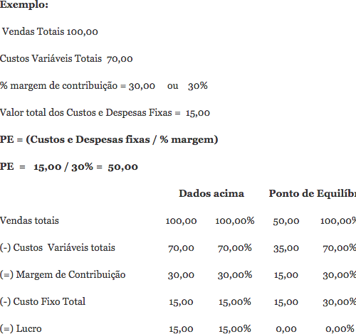

Toda empresa possui uma quantidade X de produtos produzidos em um determinado período e também um custo Y para a produção desses produtos. Veja a tabela abaixo que ilustra essa situação:
Por exemplo, se a empresa nada produzir, ela terá $ 15,00 de custo fixo. Se ela fabricar uma unidade do produto, seu custo total será de $ 17,00 correspondente à soma de $ 15,00 do custo fixo com o custo variável de $ 2,00. Caso a empresa produza duas unidades, o custo total aumenta para $ 18,50 pois, embora o custo fixo permaneça em $ 15,00, o custo variável da fabricação aumenta para $ 3,50.
Existe também o chamado "Break-Even point"/Ponto de equilíbrio, que consiste na medida exata em que a empresa teria o maior lucro possível. A receita é a quantidade * preço vendido. O ponto de lucro máximo é quando o custo marginal se iguala à receita marginal e o ponto de lucro mínimo seria quando a receita da empresa cobre seus custos de produção porém sem sobrar absolutamente nada. Ponto de equilíbrio é o valor que a empresa precisa vender para cobrir o custo das mercadorias e despesas para não ter lucro nem prejuízo.
margem de Contribuição é a diferença entre Vendas totais e Custos Variáveis totais. Ex: Vendas totais 100,00 (menos) custos variáveis totais 70,00 = margem 30,00. (100,00 – 70,00) = 30,00 / 100 = 30% (margem em percentual).
O Ponto de Equilíbrio é o quociente simples da divisão dos valores dos custos e despesas fixas pela margem de contribuição.
Como podemos observar no exemplo, vendendo 100,00, teremos um lucro de 15,00. Se vendermos apenas 50,00, que é o Ponto de Equilíbrio, não teremos lucro nem prejuízo.